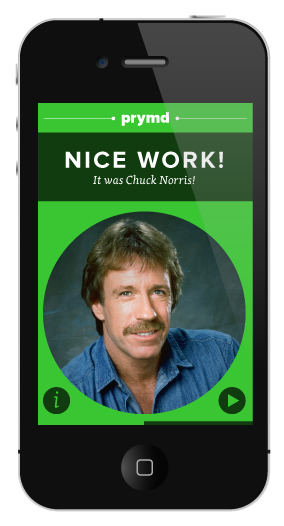
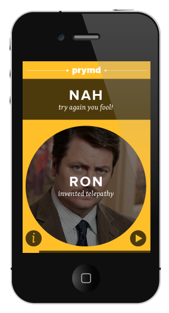

Prymd is a beautiful, mobile game that helps you remember people's names, their faces, and facts about them. By matching fun(ny) facts with peoples faces in a memory style game you'll learn more about people you're going to meet and be better at remembering their name after you've met them. Use Prymd for all of your upcoming professional meetings and networking events.
Prymd was envisioned, constructed, and launched at StartUp Weekend Las Vegas in January of 2013. Prymd was built around the notion that people remember other people better when they know something interesting about them. We attach funny facts to people's faces and let you guess which one is true. Three funny facts about our founding team are - we love kickball, we can eat sushi with a single chopstick, and we've been known to pair program a burrito-bot to make enchiladas.
